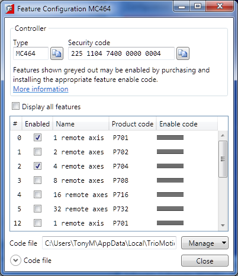

Some Motion Coordinators have features which can be enabled by the user. The features are enabled using the "Feature Configuration" tool.

The features are made available by purchasing feature enable codes from Trio Motion Technology Ltd, each feature having a unique code, the codes also being different for every controller. Feature codes are stored on the computer in a special file on the computer which holds all feature codes entered. This file (default "FeatureCodes.tfc") is normally located in the "TrioMotion \ MotionPerfectVX.Y" sub directory of the current user's local application data directory. The file used can be changed to another in a different location by clicking on "Manage" button and selecting " Change from the drop-down list. It is also possible to import values from another Feature Code file by selecting "Import" from the same drop-down list.
To manually enter a new code select the appropriate "Enable" Code" cell in the feature grid and enter the code, being careful to get the case of the characters correct. If the code is entered correctly then the "Enabled" check box for the feature should become enabled and allow the user to enable and disable the feature.
When purchasing feature codes you will need to supply the Security code for your controller to ensure that you get the correct codes.
Feature codes are based on three factors: the feature number, an internal device code held in the controller, and the serial number of the controller. Each code is unique, so it is vital that the correct security code and feature number (or product code) are used when ordering a feature code.